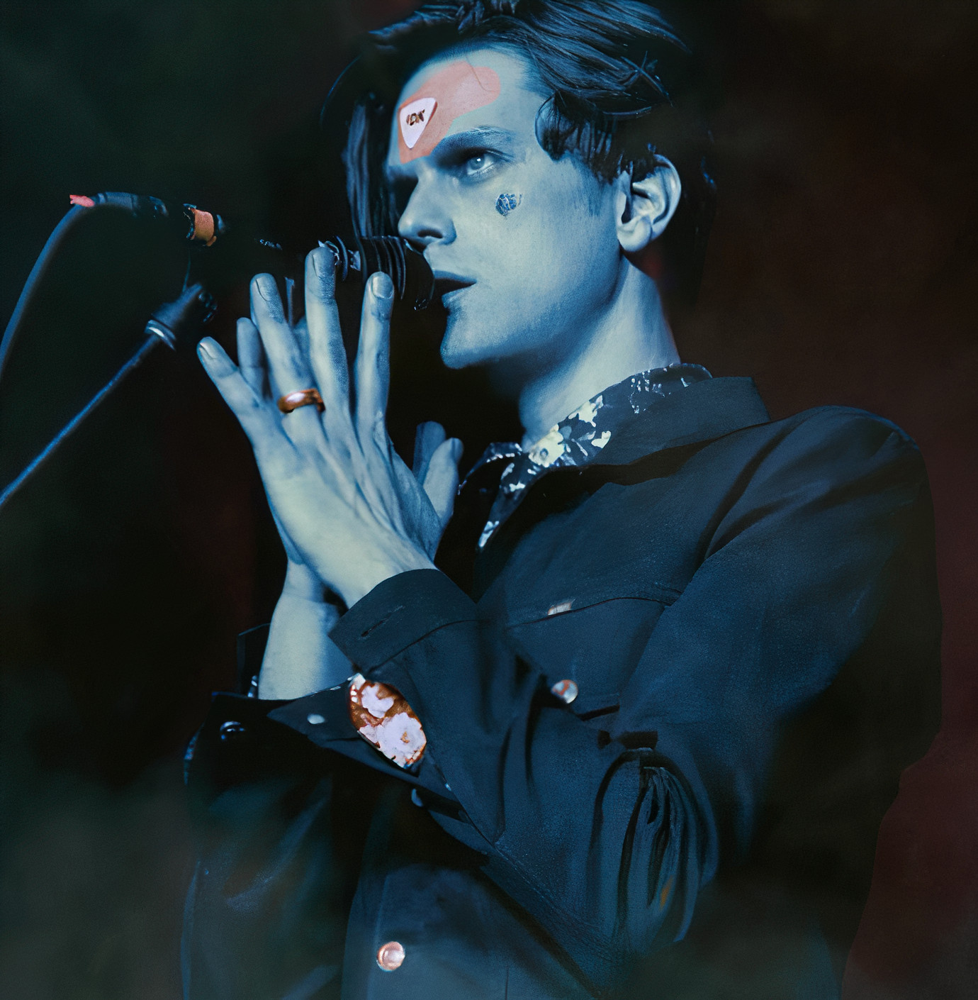
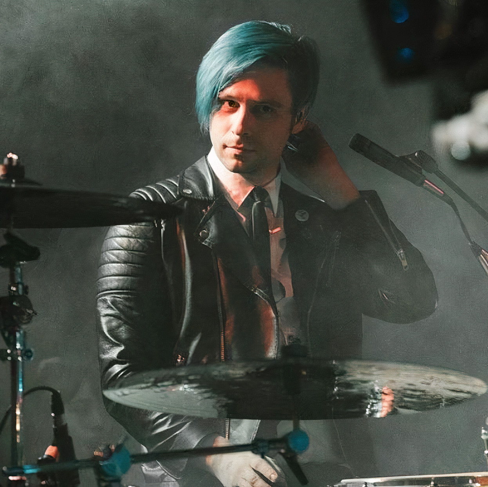

I Don't Know How But They Found Me (iDKHOW) is a two-piece band. Its members include bassist and vocalist Dallon Weekes and drummer Ryan Seaman. The band began as a secret in 2016 when both members were still in their old bands. It was built on the concept of a band that never got their big-break in the 1980s, but is slowly rising to fame after the discovery of their old cassettes in the 2000s.
Months after the band's first performance, its existence was announced to the world. Three singles, "Modern Day Cain", "Choke", and "Nobody Likes The Opening Band" were released prior to their signing to Fearless Records. The band continues to release music, building its concept story along the way for its many fans (commonly under the name Search Party) to decipher.
iDKHOW released 1981 Extended Play in 2018, comprising of 6 tracks, "Introduction", "Choke", "Social Climb", "Bleed Magic", "Absinthe", "Do It All the Time". The EP covers genres such as new wave and alternative rock. It also peaked at #1 on the US Heatseekers Albums chart (Billboard) and #14 on the US Alternative Albums chart (Billboard).
In 2020, the band recorded and released RAZZMATAZZ in the middle of the COVID-19 pandemic. The album's tracks include "Leave Me Alone", "Indoctrination", "Mad IQs", "Nobody Likes The Opening Band", "New Invention", "From The Gallows", "Clusterhug", "Sugar Pills", "Kiss Goodnight", "Lights Go Down", "Need You Here", "Door", "Tomorrow People", and "Razzmatazz". It peaked at 122 on the US Billboard 200 and continues to grow in popularity.
Dallon Weekes

Dallon James Weekes is the leader singer and bassist of iDKHOW. In 2016, he invited an old bandmate and friend, Ryan Seaman, to start a band. The name of the band is a quote from the sci-fi film Back to the Future, which is a favourite of his. He often takes Although a lot of inspiration from the 1960s-1980s and has gone on record about how he enjoys delving into nostalgia. Artists whose work he enjoys include The Strokes, The Killers, Louis XIV, Ima Robot, and Franz Ferdinand. Weekes is currently based in Utah with his wife and children, who he has featured in some of his songs.
Ryan Seaman

Ryan Eric Seaman is the drummer of iDKHOW. After playing the drums for Weekes for his solo work and when their old band, he decided to form the two-piece with Weekes. His first experience with music was listening to The Beatles. He then started listening to the likes of Green Day, Nirvana, Smashing Pumpkins, Rage Against the Machine, and Weezer. His admiration for punk rock drummers such as Ringo Starr and Travis Barker was an essential part of his childhood, especially since he started drumming aged 8. Comfort is important when picking outfits for himself along with his liking for 80s fashion.